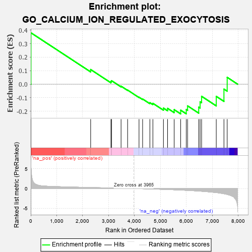
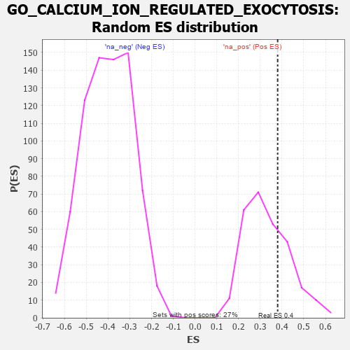

| | | Dataset | 7d |
| Phenotype | NoPhenotypeAvailable |
| Upregulated in class | na_pos |
| GeneSet | GO_CALCIUM_ION_REGULATED_EXOCYTOSIS |
| Enrichment Score (ES) | 0.37992805 |
| Normalized Enrichment Score (NES) | 1.140358 |
| Nominal p-value | 0.31598514 |
| FDR q-value | 0.547609 |
| FWER p-Value | 1.0 |
Table: GSEA Results Summary

Fig 1: Enrichment plot: GO_CALCIUM_ION_REGULATED_EXOCYTOSIS
Profile of the Running ES Score & Positions of GeneSet Members on the Rank Ordered List
| PROBE | GENE SYMBOL | GENE_TITLE | RANK IN GENE LIST | RANK METRIC SCORE | RUNNING ES | CORE ENRICHMENT | | 1 | SYT2 | | | 8 | 5.577 | 0.3799 | Yes |
| 2 | REST | | | 2308 | 0.259 | 0.1084 | No |
| 3 | CHP1 | | | 3089 | 0.138 | 0.0197 | No |
| 4 | SYT8 | | | 3115 | 0.135 | 0.0258 | No |
| 5 | CDK5 | | | 3480 | 0.080 | -0.0145 | No |
| 6 | SYT11 | | | 3732 | 0.036 | -0.0436 | No |
| 7 | SYT12 | | | 4172 | -0.037 | -0.0963 | No |
| 8 | SYT17 | | | 4310 | -0.061 | -0.1093 | No |
| 9 | SYT4 | | | 4590 | -0.116 | -0.1365 | No |
| 10 | RAP1B | | | 4706 | -0.140 | -0.1414 | No |
| 11 | DOC2B | | | 5113 | -0.229 | -0.1768 | No |
| 12 | RIMS2 | | | 5272 | -0.265 | -0.1786 | No |
| 13 | TRIM9 | | | 5526 | -0.327 | -0.1880 | No |
| 14 | VAMP7 | | | 5777 | -0.399 | -0.1923 | No |
| 15 | SYT9 | | | 5992 | -0.469 | -0.1872 | No |
| 16 | VAMP3 | | | 6043 | -0.487 | -0.1602 | No |
| 17 | SYT15 | | | 6472 | -0.650 | -0.1696 | No |
| 18 | VAMP2 | | | 6525 | -0.672 | -0.1302 | No |
| 19 | ARF1 | | | 6583 | -0.701 | -0.0895 | No |
| 20 | SYT1 | | | 7148 | -1.033 | -0.0899 | No |
| 21 | KCNB1 | | | 7444 | -1.327 | -0.0364 | No |
| 22 | TRPV6 | | | 7569 | -1.502 | 0.0506 | No |
Table: GSEA details [plain text format]

Fig 2: GO_CALCIUM_ION_REGULATED_EXOCYTOSIS: Random ES distribution
Gene set null distribution of ES for GO_CALCIUM_ION_REGULATED_EXOCYTOSIS